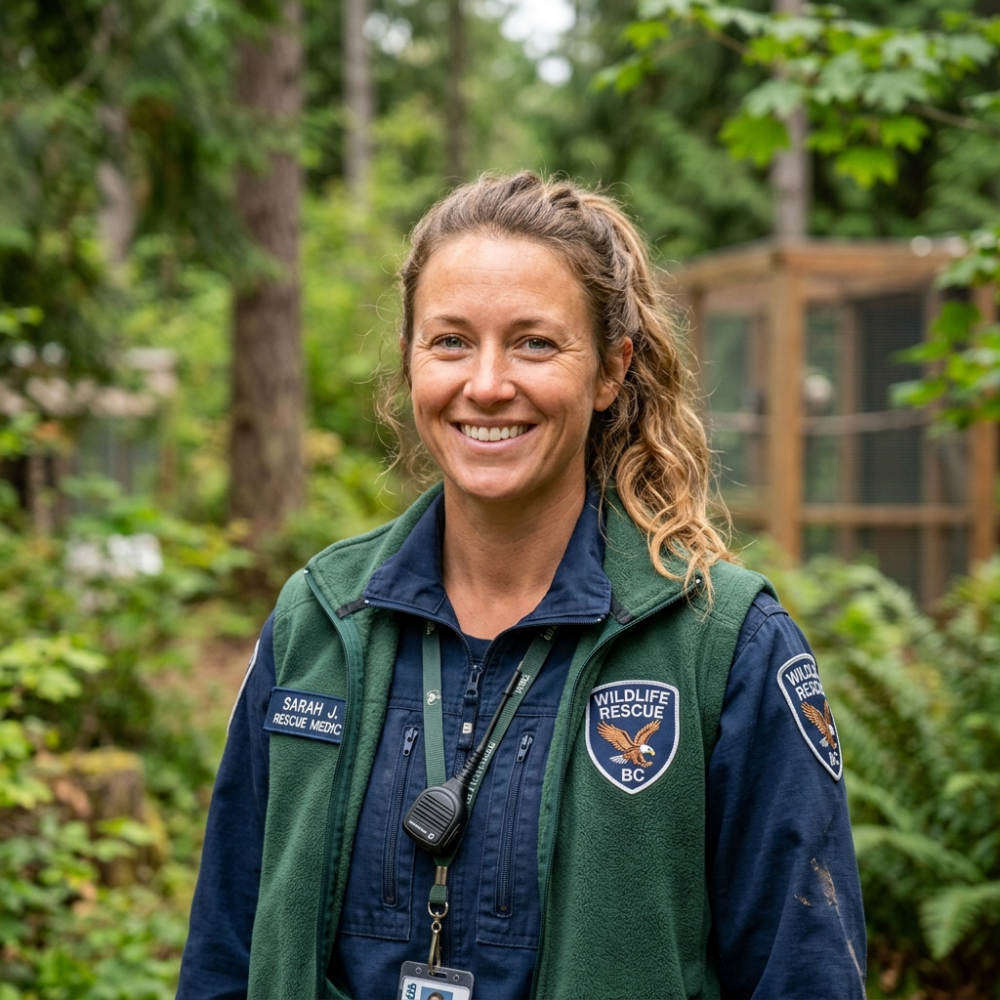

Join the forefront of exotic animal medical research.
A 3-year intensive program focused on surgical innovations in avian and reptilian species.
Apply Now12-month hands-on clinical rotation in advanced anesthetic monitoring and critical care.
Apply NowShort-term shadowing opportunities for 3rd and 4th-year veterinary medicine students.
Apply Now